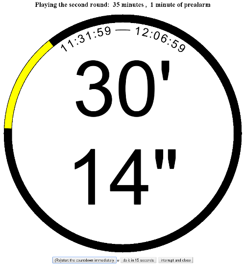
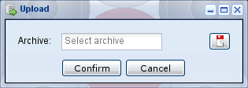

Other windows¶

The countdown window.¶
Countdown¶
This page shows a simple countdown widget that at determined states emits different alarms (using SoundManager): it's driven by the values duration and prealarm of tourney.
The countdown may be started (or restarted again) with the first button; alternatively you can use the second button that will start the countdown after 15 seconds, so you can reach your own table in time.
Close the countdown window or click on the third button when done: to prevent accidental close, it asks for an explicit confirmation.
Hint
Given that the start time is sent back to SoL and stored in the database, should the
computer be restarted for any reason, the countdown will be restored from the same
instant.
This allows also to open multiple instances of the countdown, possibly from different computers, for example when you would like to show the same countdown in a different room. Of course in this case the countdown must be started on one single host, while on the others it will sufficient to show the new one after the countdown has been started.

The upload window.¶
Upload¶
This very simple window allows the upload of whole tourneys data, as exported by another
instance of SoL. The new data won't clobber existing information though, only missing fields
will be updated of any existing entity.
Anybody can upload .sol (or .sol.gz, the compressed version) archives. All
authenticated users but guest can upload .zip files with tourneys data, players emblems
and clubs portraits.